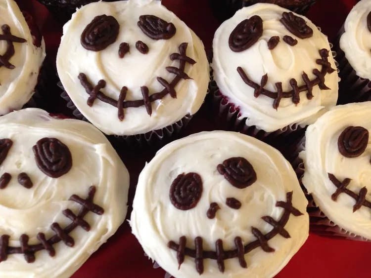

Halloween Jack Skellington Cupcakes

Description
For this Halloween-themed dessert, you can use any chocolate cupcake or muffin recipe. These scary skull cupcakes are always a hit at any party I bring them to. I was inspired by the movie "Nightmare Before Christmas" when I created them.
Ingredients
- 1 (15.25 ounce) package devil's food cake mix (such as Duncan Hines)
- 1 cup water
- 3 eggs
- ⅓ cup vegetable oil
- 1 ½ (16 ounce) packages prepared vanilla frosting
- 1 (7 ounce) pouch prepared chocolate frosting
Steps
- Preheat the oven to 350 degrees F (175 degrees C). Line two 12-cup muffin tins with paper liners, preferably dark-colored or Halloween-themed ones.
- Combine cake mix, water, eggs, and oil in a large bowl; beat with an electric mixer on low speed until moistened, about 30 seconds. Beat at medium speed until batter is smooth and creamy, about 2 minutes. Spoon batter into the prepared muffin cups, filling each 3/4 full.
- Bake in the preheated oven until a toothpick inserted in the center comes out clean, 18 to 20 minutes. Remove from oven and cool tins on a wire rack for 15 minutes. Remove cupcakes from the tins and cool them completely on a wire rack before decorating, about 1 hour.
- Frost each cupcake with a thin layer of white vanilla frosting and refrigerate for 30 minutes to make decorating easier.
- Remove cupcakes from the fridge and apply a second layer of white frosting. Fill a piping bag outfitted with a small round tip with chocolate frosting and draw a skull face on the cupcakes: pipe large ovals for the eyes, two dots for the nostrils, and a large "stitched" smile for the mouth.